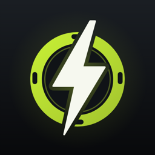
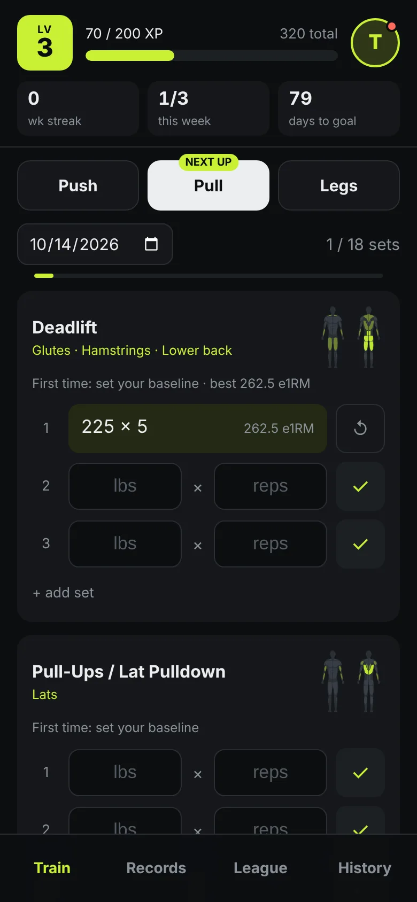
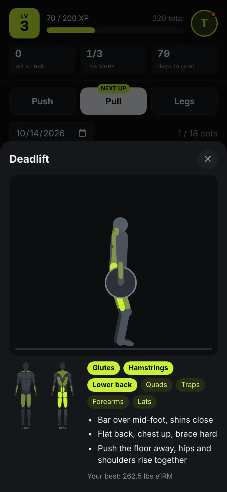
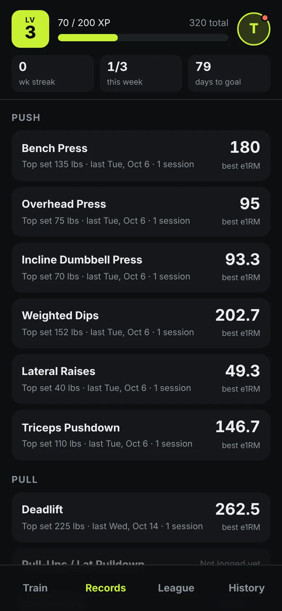
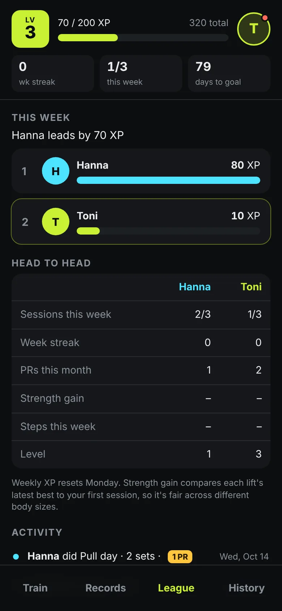

Case study · Self-hosted web app · October 2026A gym tracker that runs on my home server and sends me escalating push reminders when I skip the gym. I built it because my own workout data showed I was quitting for weeks at a time.

I tracked lifts in an Excel sheet and, before that, the Hevy app. The spreadsheet worked, but it felt like a spreadsheet. When I exported my Hevy history and looked at the dates, the problem wasn't the tracker. It was consistency.
Sessions per week from my Hevy export (Dec 22, 2025 to Jul 12, 2026). The dashed line is the target of 3 a week. Source: workouts.csv, 184 sets, analyzed in pandas.
That set the requirement: the app had to come to me. Logging had to feel like progress, and the app had to notice when I stopped and keep pushing until I came back. That's what Duolingo does, and it works on people like me.
Today's Push, Pull or Legs workout, pre-filled with last session's weights. Each lift shows a front and back muscle map.

Tap a lift for an animated figure doing the movement, with the working muscles lit and form cues.

Best estimated one-rep max (e1RM) per lift. Beating it counts as a PR and earns bonus XP.

My partner has her own profile. There's a weekly XP race, a head-to-head table and an activity feed.
Screenshots are from a test build with sample data, at iPhone size. Each person installs their own profile URL to the home screen, with its own icon colour.
The whole app is a single Docker container on my home server. It's only reachable over my Tailscale network, so it never touches the public internet, and there are no passwords to manage.
The front end is plain HTML, CSS and JavaScript with no framework and no build step. A web app manifest and a service worker let it install to the home screen like a native app, with its own icon and full-screen view. The service worker caches the app shell and also receives push messages when the app is closed.
FastAPI serves JSON endpoints such as GET /api/state, POST /api/sets, GET /api/league and POST /api/push/subscribe. The browser calls them with fetch() and re-renders. Each request carries the profile, so one server handles both users with their data kept separate.
Each person gets their own address, like /u/toni/. The server fills that profile's name and colour into the page and generates a matching manifest and icon. Installing from that URL gives each phone its own app.
Service workers and Web Push only work over HTTPS, and iPhones only allow push for web apps installed to the home screen (iOS 16.4+). Tailscale Serve provides a valid certificate for a private hostname, which solved both without opening any ports to the internet.
Docker Compose builds the image and mounts a data/ folder for the database and the push signing key, so I can rebuild or upgrade the app without touching my data. On the v2 to v3 upgrade, the app migrated the single-user database to multi-user automatically on startup. I took a backup first.
Twice a day (before and after my shift), a background loop checks each profile. If you haven't trained, it picks a message tier based on days since your last session, fills in real numbers from your history, signs it with the server's VAPID key, and sends it through Apple's or Google's push service. Subscriptions the push service reports as dead are deleted automatically.
| Days since last session | Tier | Example message |
|---|---|---|
| 2–3 | nudge | Bench Press is waiting. Last time: 135×10. One more rep and that's a PR. |
| 4–6 | sass | Your Pull day called. It wants to know if you're okay. |
| 7–13 | drama | It's not me, it's the 8 days. One session. That's all I'm asking. |
| 14–29 | guilt every 3rd day | I'm not mad. I'm just going to sit here. In the rack. Alone. |
| 30+ | ghost weekly | These reminders don't seem to be working. So I'll ease off. |
| Streak at risk | overrides all | 3-week streak at risk. You need 1 more session this week. |
| Partner ahead | every other day | Hanna is pulling ahead. Hanna: 2 sessions this week. You: 0. |
Tiers map onto my real history: each of my four month-long breaks would have passed through nudge, sass, drama and guilt before the app backed off. Templates avoid repeating any of the last six messages sent.
The database stores facts only: users, sessions, sets (weight × reps) and a log of every notification sent. XP, levels, PRs and streaks are never stored. They are calculated in SQL every time from the raw sets, so if I change a rule, the whole history recalculates correctly and nothing drifts out of sync.
The core query is a window function. For every set, it finds the best e1RM from all earlier sets of the same lift by the same person. A set is a PR if it beats that number. A user's first ever set of a lift has no earlier best, so it's a baseline, not a PR.
WITH ordered AS ( SELECT st.*, se.date, se.user_id, MAX(st.e1rm) OVER ( PARTITION BY se.user_id, st.exercise_id ORDER BY se.date, st.set_no, st.id ROWS BETWEEN UNBOUNDED PRECEDING AND 1 PRECEDING ) AS prev_best -- best of every set before this one FROM sets st JOIN sessions se ON se.id = st.session_id ) SELECT *, CASE WHEN prev_best IS NOT NULL AND e1rm > prev_best THEN 1 ELSE 0 END AS is_pr FROM ordered;
Comparing raw weights between two people of different sizes isn't meaningful. The head-to-head table uses strength gain instead: for each lift, the percent change from your first session's best e1RM to your latest, averaged across lifts. The weekly race uses XP, which counts effort rather than load.
Every notification is logged with its tier, template and timestamp. Joined to the sessions table, that answers the question this whole project is about: which messages are followed by a workout within 24 hours, and which ones get ignored?
An import script loaded my existing Excel tracker into the database, and I can re-run it safely without creating duplicates. Any user can export all their sets as CSV. The SQLite file copies straight into DB Browser for SQL practice on my own data.
I built LiftQuest with Claude, an AI coding assistant, which wrote the application code. My part was everything around it: deciding what to build and why, defining the rules, running it on my own infrastructure, and fixing it when it broke in production.
tailscale serve failed because Serve wasn't enabled for my network. I enabled it in the admin console and re-ran it.
CACHED, and the app folder had no new files. I'd copied an old zip to the server. I replaced it, rebuilt, and v3 came up.
sudo instead.